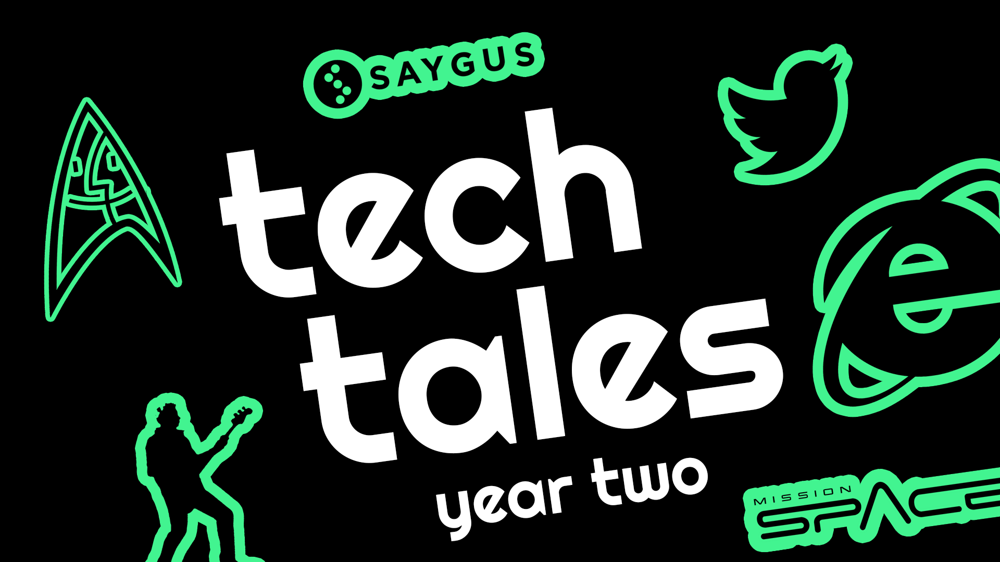
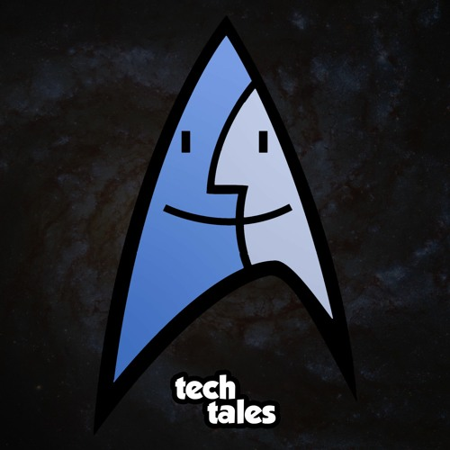
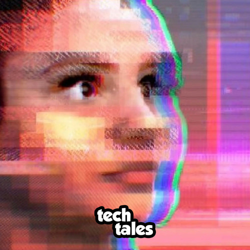
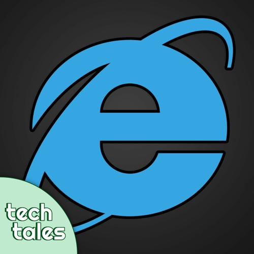
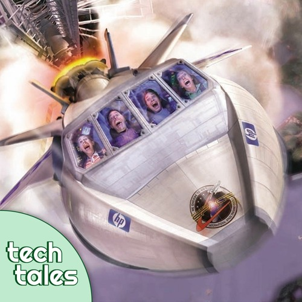
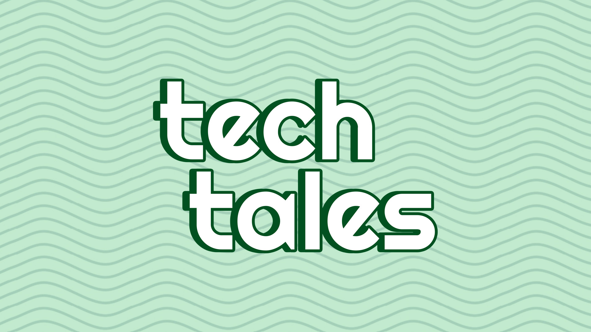

Today, my podcast Tech Tales is two years old. The second year was an absolute blast.
The second year of Tech Tales ended up as 18 episodes, with nearly 12 hours of runtime. In total, the show now has 47 episodes, over 10K plays on audio platforms, and over 100 subscribers on YouTube.
The bulk of the second year was dedicated to telling the story of Internet Explorer, from its high-stakes antitrust lawsuit to how it shaped the internet as we know it today. I didn’t anticipate dedicating 10 episodes to one topic, which was over half the show’s output in year two, but I’m pretty proud with the result. Internet Explorer was so influential in technology that I wanted to do the topic the justice (heh) it deserved.




There was a great mix of topics in the rest of the year, though. Tech Tales covered Apple’s secret Project Star Trek, the Microsoft Tay chatbot, Disney’s troubled Mission: SPACE simulator attraction, U2 invading everyone’s iTunes libraries, and a scam crowdfunded smartphone. There was also the first Movie Club episode, where we talked about the 1995 movie Hackers, which will hopefully be the first of other episodes about tech movies.
Halfway through the year, I also gave Tech Tales its first design overhaul with a new green-and-white color scheme. This was the first time I seriously tried to make a text-based logo myself (the original logo was made by a friend), with input from others as I went along. That was pretty fun!

I want Tech Tales to be an entertaining and interesting look into the technology world. More importantly than that, though, I want it to be a fun thing that is mine.
Tech Tales has a lot of overlap with my day job as a tech journalist; researching a podcast episode and researching a news topic isn’t all that different. However, the work from my day job is ultimately owned by someone else because that’s how capitalism rolls. The past few years of my professional career, especially the last month, have taught me how critical it is to have a product of my labor that I own and will not randomly change hands one day.
In no particular order, I would like to thank Joe Fedewa, Cody Toombs, Zachary Wander, Katie Janzen, and Ryan Gillie for being guests in year two. I also want to thank the FediFollows account on Mastodon, which promoted the show twice, each time giving the show a boost in followers on the platform and some new listeners.
You can listen to Tech Tales on your podcast player of choice. I’m so excited for what’s to come.